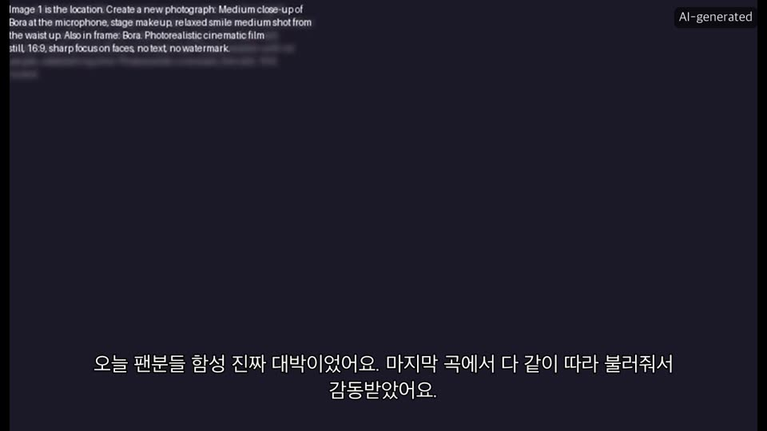
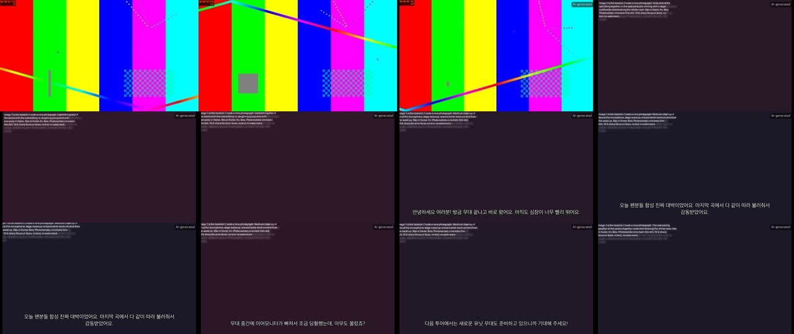

afterstage
Give it a clip and a sentence; it continues the story. A K-pop concert clip plus “a cosy podcast right after the show” becomes the original clip → a seamless transition into a studio → members talking in their own cloned voices, lip-synced, subtitled, with a music bed. Every model runs on one NVIDIA DGX Spark. No cloud APIs.
Don't generate a movie — run a tiny film studio
Open video models produce about 5 seconds per generation (Wan: 81 frames at 16 fps), and characters drift between generations. A 90-second podcast can't come from one prompt.
So afterstage plans first, then generates many small, controllable pieces and edits them together — exactly how a production crew works:
- Analyst — watches the clip, learns who's in it (faces, voices, outfits, style).
- Writer — a local LLM turns your request into a shot list (
screenplay.json). - Voice actors — a voice-cloning TTS speaks every line.
- Production designer — composes one keyframe per shot from cast reference crops.
- Camera crew — lip-sync and image-to-video models animate each keyframe.
- Editor — ffmpeg cuts it into one film.
The two JSON documents in the middle — cast.json and screenplay.json — are human-editable. That's the core design bet: AI does the work, you stay the director.
Three local processes on one box
The afterstage Python process orchestrates. Heavy diffusion runs in ComfyUI; the LLM and VLM run in Ollama; analysis and TTS run in-process. Everything binds to 127.0.0.1, and a locality guard refuses any endpoint that resolves to a public IP.
afterstage (Python 3.12, cu130 torch)
CLI + Gradio UI, project cache, scene/face/ASR/Demucs analysis, Chatterbox TTS, ffmpeg editor, ComfyUI & LLM clients.
ComfyUI :8188
Qwen-Image-Edit-2511, InfiniteTalk on Wan2.1-14B, Wan2.2-A14B I2V/FLF, ACE-Step 1.5. Core nodes only — graphs are built in Python and validated against /object_info before queueing.
Ollama :11434
Qwen3-32B writes the screenplay with JSON-schema constrained output; Qwen3-VL-8B captions scenes and outfits. Unloaded (keep_alive: 0) before diffusion starts to free unified memory.
Six stages, each cached and resumable
Each stage reads the previous stage's artifacts from the project folder and writes its own. Pick a stage:
cast.json: members (face/body crops, ArcFace centroid, appearance), scenes + captions, transcript, vocal stem, last frameWhat happens
- Shot detection — PySceneDetect content detector; scenes merged down to ≤24; one keyframe each.
- Audio — Demucs splits vocals from the concert mix; Whisper large-v3-turbo transcribes them with timestamps.
- People — sample frames at 2 fps, InsightFace (RetinaFace + ArcFace) gives a 512-d embedding per face, a greedy cosine clusterer groups them into members (≥1 s screen time). Best crops ranked by detector score × frontalness × size.
- Captions — Qwen3-VL describes each scene and each member's outfit; summary + visual style for the writer.
Code: afterstage/stages/analyze.py, analysis/faces.py, analysis/audio.py, analysis/scenes.py
Face clustering, live
Illustration: detections stream in from sampled frames; each joins the most similar cluster above the threshold or starts a new one. Too low merges members; too high splits one person into several.
cast.json + your request (“an interview with an MC…”)screenplay.json: sets, guests, shots (talk / broll / bridge), lines, visuals, motion, music promptStructured writing with a repair loop
The writer sends the cast brief to a local OpenAI-compatible server with response_format: json_schema generated from the pydantic Screenplay model. The reply is parsed (tolerating <think> blocks and fences) and then checked twice:
- schema — pydantic validation
- semantics —
validate_against(cast): unknown member ids, missing sets, speakerless talk shots, lines >400 chars, bridge not first…
Problems are fed back verbatim as a new user turn; up to 3 attempts. Then a deterministic normalise() fixes ids and invariants the LLM shouldn't be trusted with. People the format needs but the clip lacks (an MC, a host) are declared as guests and become reference-less cast members.
Code: afterstage/stages/write.py, afterstage/llm.py, afterstage/schema.py
Repair loop
Shot kinds
One member speaks one line (4–12 s). Rendered lip-synced from their keyframe + cloned voice.
Silent 3–5 s cutaway: establishing shots, reactions, details, laughs.
Optional first shot: morphs from the source clip's last frame to the first new keyframe — the seam between real and generated footage.
audio/s04.wav (24 kHz, +0.25 s breath pad)Chatterbox Multilingual, in-process
Zero-shot voice cloning in 23 languages including Korean, with an exaggeration knob we drive from the shot's emotion. The model loads lazily — only if some line actually needs (re)voicing — and is released before diffusion.
Voice samples matter most. Concert audio is singing over a band, so the best input is 5–20 s of clean speech per member (afterstage set-voice … --file). Fallback: a window of the Demucs vocal stem (--start/--end), or the model's default voice for guests.
| emotion | exaggeration |
|---|
Code: afterstage/tts/__init__.py, afterstage/stages/voice.py
Per-line synthesis
sets/studio.png plates + keyframes/sNN.png (one approved still per shot)Compose, then verify identity
First an empty set plate per location (text-to-image). Then each shot's keyframe is composed by Qwen-Image-Edit-2511 from up to three reference images: the set plate plus the two most relevant members (the speaker always included). The prompt names each reference (“Image 2 shows Ari…”) and pins wardrobe/hair continuity.
With InsightFace enabled, every candidate is scored: min over characters of max cosine(ArcFace(face in keyframe), member centroid). Below 0.35 → re-roll with a new seed (≤2 retries), keep the best.
Code: afterstage/stages/design.py, comfy/workflows.py::keyframe_graph
Reference composition + identity gate
shots/sNN.mp4 per shot + music/bed.wavTalk shots: InfiniteTalk windows
InfiniteTalk renders 81 frames (3.24 s at 25 fps) per window. Longer lines are chained inside one ComfyUI graph: each new window receives all frames so far as previous_frames, re-renders the last 9 as motion context, and the node's trim_image output drops them before appending. The audio offset is derived from the accumulated frame count, so lips stay in sync across seams.
B-roll & bridge: Wan2.2's two experts
Wan2.2-A14B is a mixture of two 14B experts: the high-noise model lays out motion and composition, the low-noise model refines detail. We run two KSamplerAdvanced passes with the split at half the steps; draft mode adds the lightx2v 4-step LoRAs at CFG 1.
Shots render grouped by model family (all talk shots, then all Wan2.2 shots) so the 14B checkpoints aren't swapped per shot. Code: afterstage/stages/render.py, render/__init__.py, comfy/workflows.py
final/<title>.mp4 + .srtPure ffmpeg + Pillow
- Conform every clip to one format (1280×720, 25 fps, yuv420p, 48 kHz stereo; silent tracks added) — cached per clip.
- Concat source → generated shots with the concat demuxer (stream copy).
- Mix the music bed only under the generated part, with fades and
sidechaincompressducking keyed by dialogue. - Overlay subtitles and the AI badge as Pillow-rendered PNGs (CJK fonts, no libass needed) with time-gated
overlayfilters. - Tag provenance metadata (generator, AI-generated, prompt, start time of synthetic part).
Code: afterstage/editor/__init__.py
Timeline
The real workflows, rendered from code
These are the exact API-format prompts afterstage/comfy/workflows.py builds (exported by script/build_data.py). Each graph is checked by a static validator against ComfyUI's /object_info schema — unknown nodes, missing inputs, wrong link types, enum values, model files — before it's queued, and all of them were accepted by a live ComfyUI server's own validator.
Click a node
→ #id.slot (NodeType).Edit anything, re-render only what changed
Every artifact goes through Project.cached(key, inputs, produce). The inputs (text, config, models, and the size+mtime of input files) are hashed; a hit with the same fingerprint skips work. Because a shot's video fingerprint includes its keyframe and audio files, invalidation propagates down the chain automatically.
Fitting a film studio in 128 GB of unified memory
The GB10 shares 128 GB between CPU and GPU. Weights below come from afterstage/models.yaml (fp8 where available). Stages run sequentially and release what they don't need: the LLM is unloaded after writing, TTS after voicing, ComfyUI's cache is freed between stage groups.
Nothing leaves the box; nothing pretends to be real
Locality guard
config.ensure_local() resolves every LLM/VLM/ComfyUI URL and refuses public addresses unless privacy.allow_remote: true. ComfyUI runs with --disable-api-nodes; Gradio/HF telemetry is disabled at import; setup sets HF_HUB_OFFLINE=1 after warming caches.
Disclosure baked into the edit
A visible AI-generated badge on every synthetic frame, and an embedded provenance comment (ai_generated: true, prompt, where synthesis starts). Both on by default.
Writer guardrails
The system prompt forbids sexual, hateful or defamatory content about real people, and forbids inventing group members; extra people must be declared as guests.

How to test it, level by level
Levels 0–1 run anywhere (no GPU). Levels 2–6 run on the DGX Spark. Tick items as you go — progress is saved in this browser.
Level 0 · Unit & integration tests (any machine)
Create the dev environment
uv venv -p 3.12 .venv uv pip install -p .venv/bin/python -e ".[dev]"
Run the suite
.venv/bin/python -m pytest -q # expect: 22 passed .venv/bin/ruff check afterstage tests # expect: All checks passed!
What it covers:
Level 1 · Dry run (any machine, no models)
Template writer + placeholder TTS + ffmpeg placeholder video. Every stage, the cache and the editor run for real.
Make any test clip (or use a real one)
ffmpeg -f lavfi -i testsrc2=s=1280x720:r=30:d=6 -f lavfi -i sine=f=440:d=6 \ -c:v libx264 -pix_fmt yuv420p -c:a aac -shortest clip.mp4
Run everything
.venv/bin/afterstage --dry-run make clip.mp4 -o projects/dry \ -p "a podcast after the show" --cast "Ari,Bora" .venv/bin/afterstage status projects/dry
Expect
projects/dry/final/after_the_show.mp4(~32 s: 6 s source + generated part) and an.srt.Prove incremental re-render
# run again: every stage logs nothing to generate .venv/bin/afterstage --dry-run run projects/dry # edit one "line" in projects/dry/screenplay.json, run again: .venv/bin/afterstage --dry-run run projects/dry # only voice/shot/conform of that shot regenerate

Level 2 · Install on the DGX Spark
Setup (≈1–2 h, ~140 GB downloads)
git clone https://github.com/tianhaoz95/afterstage ~/afterstage && cd ~/afterstage bash scripts/setup_spark.sh # or SKIP_MODELS=1 for software only source scripts/afterstage.env bash scripts/start_services.shThe script asserts CUDA is visible in both venvs and that Chatterbox imports. Watch for: aarch64 wheel builds (insightface compiles), the Chatterbox
--no-depsstep.Doctor
.venv/bin/afterstage doctor --comfy-dir $COMFYUI_DIR
Every line should be ✓: ffmpeg, LLM, VLM, TTS, ComfyUI (shows GB10 + memory), workflow keyframe/talk/broll/music validated against your ComfyUI's live schema, and model files present. A workflow ✗ means your ComfyUI version renamed a node input — the message names it.
Level 3 · Stage smoke tests on the Spark
Use a short real clip (20–40 s, a few clearly visible faces, some speech). Run stage by stage and inspect each artifact before moving on.
| Command | Inspect | Good looks like | If not |
|---|---|---|---|
afterstage new p --clip c.mp4 -p "…" --cast "A,B"afterstage analyze p | p/analysis/faces/*.jpg, afterstage cast p | One cluster per person, sharp frontal crops, sensible appearance text, transcript segments | Merged people → raise -s analysis.face_cluster_threshold=0.55; split person → lower it; crowd faces → raise face_min_size |
afterstage set-voice p m1 --file a.wav | p/analysis/voices/m1.wav | Clean speech, 5–20 s | Use --start/--end on a speaking moment of the vocal stem |
afterstage write p | p/screenplay.json | Valid ids, natural lines, 1–3 sets, bridge first | Repair loop failed → try -s llm.model=gpt-oss:120b; edit JSON by hand |
afterstage voice p | p/audio/*.wav | Recognisable voice, right language, no clipping | Better sample; adjust tts.cfg_weight (lower = slower, steadier) |
afterstage design p | p/sets/, p/keyframes/ | Faces resemble members, outfits match, no text artifacts | afterstage design p --shot s04 to re-roll; --profile final for 40-step keyframes |
afterstage render p --shot s03 | p/shots/s03.mp4 | Lips match audio; no seam jump every 3.2 s | Raise render.profiles.draft.talk_steps; check ComfyUI log for OOM |
afterstage render p then afterstage edit p | p/final/*.mp4 | Seamless bridge, ducked music, subtitles, badge | -s edit.music=false to isolate audio issues |
Level 4 · First full draft & timing
time .venv/bin/afterstage make concert.mp4 -o projects/podcast --cast "A,B,C,D" \ -p "A cosy podcast right after the concert; they laugh about a mistake nobody noticed" --review # review projects/podcast/screenplay.json, then: time .venv/bin/afterstage run projects/podcast nvidia-smi --query-gpu=memory.used --format=csv -l 5 # in another shell
Record per-shot times from the log (→ generating shot/… timestamps) and peak memory. Compare against the README estimates and adjust render.profiles.
Level 5 · Incremental edits on real models
Change one line → afterstage run should re-voice and re-render only that shot (minutes, not hours). Swap one member's voice sample → only their lines re-render. Rename a member → only the screenplay needs rewriting (write --force).
Level 6 · Final quality & UI
.venv/bin/afterstage --profile final run projects/podcast # 720p, full steps — overnight .venv/bin/afterstage ui --root projects # then on your laptop: ssh -L 7860:localhost:7860 spark # open http://localhost:7860
Troubleshooting
| Symptom | Likely cause | Fix |
|---|---|---|
ConfigError: … not on this machine or LAN | Locality guard | Point the URL at 127.0.0.1 / LAN, or set privacy.allow_remote: true deliberately |
workflow does not match this ComfyUI install | ComfyUI version renamed a node input | Update ComfyUI, or adjust the builder in comfy/workflows.py; re-run doctor |
value not in list: unet_name | Model file missing / different filename | afterstage models download, or change models: in config |
| CUDA OOM mid-render | Too many models resident with --highvram | Remove --highvram in start_services.sh; ensure Ollama unloaded (ollama ps) |
model never produced valid output | LLM can't satisfy the schema | Bigger model, -s writer.repair_attempts=5, or hand-edit the JSON |
| Boxes instead of Hangul in subtitles | No CJK font | sudo apt install fonts-noto-cjk or set edit.font |
| Chatterbox import error | Dependency pin drift on aarch64 | Re-run the --no-deps block in setup_spark.sh; check transformers==5.2.0 |
What's verified, what isn't yet
| Area | State | Evidence |
|---|---|---|
| Orchestration, cache, incremental re-render | verified | End-to-end dry-run test incl. “edit one line → only that shot regenerates” |
| Editor (conform, concat, ducking, subtitles, badge, metadata) | verified | Dry-run output above; ffprobe of streams + metadata |
| ComfyUI graphs | schema-verified | Static validator vs recorded /object_info; accepted by a live ComfyUI (CPU) validator |
| ComfyUI client protocol | verified | Fake-server test: upload → prompt → history → view |
| LLM structured output + repair loop | verified (mocked) | Mock-transport test feeds back validation errors |
| Model download URLs | verified | All resolve (HTTP 200) |
| Web UI | smoke-tested | Launches and serves; handlers reuse tested stage functions |
| GPU path (Whisper, Demucs, InsightFace, Chatterbox, real diffusion) | not yet run | Needs a first run on the Spark — Levels 2–6 above |
| Two-person lip-sync in one frame | not built | InfiniteTalk two_speakers mode exists; needs masks |
Where things live
afterstage/ cli.py typer CLI (new, make, run, analyze, write, …) pipeline.py stage orchestration project.py workspace + content-addressed cache schema.py CastBible / Screenplay (pydantic) config.py YAML config + locality guard llm.py local OpenAI-compatible client, repair loop analysis/ scenes, faces, audio stages/ analyze, write, voice, design, render tts/ Chatterbox, dummy comfy/ graph builder, validator, workflows, client render/ ComfyRenderer, DummyRenderer editor/ the cut ui/app.py Gradio UI default_config.yaml · models.yaml scripts/ setup_spark.sh, start_services.sh tests/ 22 tests + object_info fixture reports/project-walkthrough/ this site